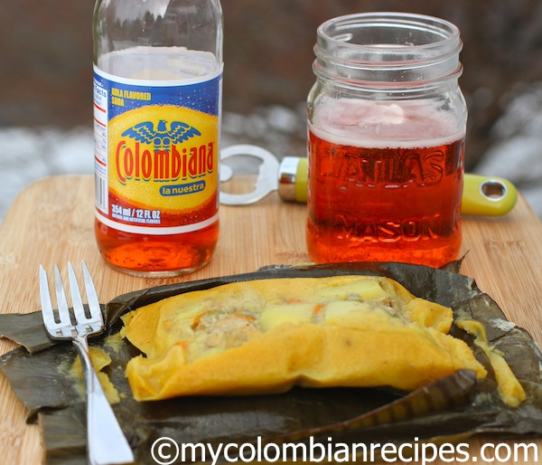

from: mycolombianrecipes.com
Tamal is a traditional dish in Many Latin American countries. Every cook, region and family has its own variation. They use different fillings, cooking methods, ways to wrap the tamales, but the principal is the same.
Marinade:
Filling:
Masa:
Wrapping:
Marinade:
To prepare the masa:
To assemble the tamales: